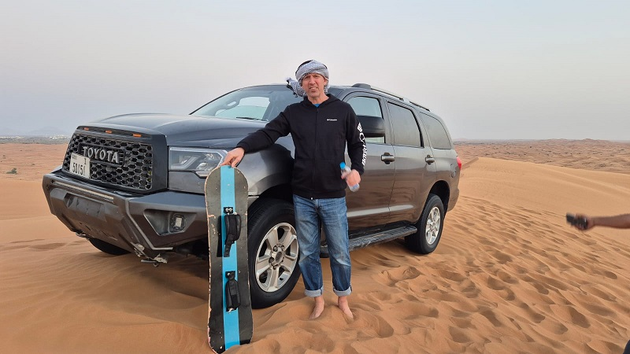
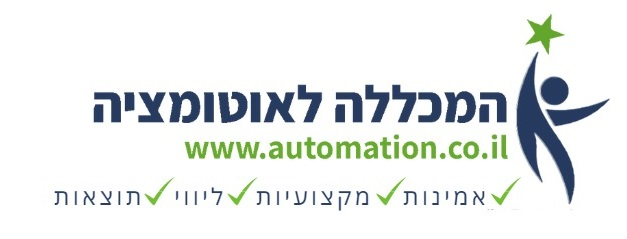

גל מטלון
מומחה בדיקות תוכנה ואוטומציה עם ניסיון הנדסי מוכח בבניית תשתיות אוטומציה, שילוב כלי AI כמו Claude Code בעבודת הבדיקות והפיתוח, ניהול צוותי QA בחברות הייטק מובילות, והובלת תהליכי גיוס, הדרכה וייעוץ לאלפי אנשים שרוצים להיכנס לתחום או להתקדם בו.
 מייסד · automation.co.il
מייסד · automation.co.il
מניהול צוותי QA ועד הכשרת הדור הבא של אנשי האוטומציה
- ✓20+ שנות ניסיון בבניית וניהול צוותי QA בחברות קטנות עד בינוניות
- ✓מומחיות ביישום מתודולוגיות QA, ובבנייה ואופטימיזציה של תהליכים
- ✓מומחה אוטומציה עם Selenium WebDriver, TestNG ו-Java (POM design)
- ✓ניסיון מעשי בבדיקת מערכות מורכבות: Client/Server, Web, Mobile
- ✓רמת תכנות גבוהה ב-C#, JavaScript, HTML, jQuery, Bootstrap ועוד
- ✓יכולת גבוהה בגיוס והדרכה של עובדים חדשים, וכישורים בין-אישיים מעולים
שפות

כשלא בונים תשתיות אוטומציה או מלמדים – אפשר למצוא אותי בין הדיונות, עם מצלוח וקצת חול בנעליים.
מסלול הקריירה שלי
מ-QA Team Leader ראשון ב-1998, דרך ניהול צוותי QA בחברות SaaS ומולטימדיה, ועד הקמת מכללה שהכשירה מעל 1,700 בוגרים.
קורסים בבדיקות תוכנה ואוטומציה עם ליווי אישי לכניסה להייטק, הכשרות מעבר לאוטומציה, הכשרות מתקדמות והדרכות לחברות הייטק, וליווי לאורך תהליך מציאת העבודה.
בנייה, הובלה וניהול QA למספר מוצרים כולל SaaS, IIoT, Web ואפליקציית דסקטופ. קביעת תקני איכות ומתודולוגיות, ובניית מסגרות אוטומציה Hands-on.
פתרון ALM לחברות קטנות-בינוניות: פשוט, ניתן להתאמה מלאה ובעלות נמוכה. שילוב ניהול דרישות, ניהול מקרי בדיקה, מעקב באגים וטיקטים בפתרון self-hosted.
ניהול QA וכן Support Tier 3, אחריות על סביבת פרודקשן SaaS, קביעת תהליכים ונהלים חוצי-ארגון, וכתיבת מסמכי STP/STD למערכות מורכבות.
הטמעת מתודולוגיות Waterfall ו-Agile, וגידול צוות ה-QA מ-3 בודקים ל-15–20 בודקים ב-4 קבוצות.
הובלת צוות בדיקות והטמעת תהליכי איכות בחברת תוכנה ארגונית.
תחילת הדרך המקצועית בעולמות ה-QA וניהול קונפיגורציה.
הכלים שאיתם אני עובד
עבודה עם AI
Top Skills (LinkedIn)
שפות ופיתוח
אוטומציה ובדיקות
כלים ותהליכים
המכללה לאוטומציה

מלמד להיכנס להייטק — בשקיפות מלאה ועם ליווי אישי
רוצים להיכנס להייטק דרך בדיקות תוכנה ואוטומציה? כבר בבדיקות תוכנה ורוצים להתקדם לאוטומציה? מתקשים למצוא עבודה בתחום? מאז 2017 ליוויתי מעל 1,712 בוגרים במסלולי QA ואוטומציה להיכנס לתחום, להתקדם ולשדרג את עצמם — עם דירוג 5 כוכבים בגוגל.